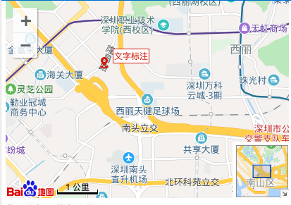

之前在Angular4使用过百度地图，记录一下踩过的坑
npm install angular2-baidu-mapak key在http://lbsyun.baidu.com/apiconsole/key中创建
import { BrowserModule } from '@angular/platform-browser'
import { NgModule } from '@angular/core'
import { AppComponent } from './app.component'
import { BaiduMapModule } from 'angular2-baidu-map'
@NgModule({
declarations: [AppComponent],
imports: [BrowserModule, BaiduMapModule.forRoot({ ak: 'your ak' })],
providers: [],
bootstrap: [AppComponent]
})
export class AppModule {}<div style="height: 500px;width: 900px;" >
<baidu-map [options]="opts" >
<!--<marker [point]="point" [options]="markOpts" (loaded)="" (clicked)=""></marker>-->
<marker *ngFor="let marker of markers" [point]="marker.point" [options]="marker.options"></marker>
<!--导航控件-->
<control type="navigation" [options]="controlOpts"></control>
<!--地图全景控件-->
<control type="overviewmap" [options]="overviewmapOpts"></control>
<!--比例尺-->
<control type="scale" [options]="scaleOpts"></control>
<!--地图类型-->
<control type="maptype" [options]="mapTypeOpts"></control>
<control type="geolocation" [options]="geolocationOpts"></control>
</baidu-map>
</div>import {Component, OnInit} from '@angular/core';
import {
MapOptions, Point, MarkerOptions, NavigationControlOptions, ControlAnchor,
NavigationControlType, OverviewMapControlOptions, ScaleControlOptions, MapTypeControlOptions, MapTypeControlType,
GeolocationControlOptions
} from 'angular2-baidu-map';
@Component({
selector: 'app-root',
templateUrl: './app.component.html',
styleUrls: ['./app.component.sass']
})
export class AppComponent {
public opts: MapOptions;
public markers: Array<{ point: Point; options?: MarkerOptions }>;
public controlOpts: NavigationControlOptions;
public overviewmapOpts: OverviewMapControlOptions;
public scaleOpts: ScaleControlOptions;
public mapTypeOpts: MapTypeControlOptions;
public geolocationOpts: GeolocationControlOptions;
// 文字标注
public text: string;
public onMarkerLoad(marker: any) {
const label = new window.BMap.Label(’文字标注‘, {
offset: new window.BMap.Size(20, -12)
});
label.setStyle({
border: '1px solid #d81e06',
color: '#d81e06',
fontSize: '10px',
padding: '1px'
});
marker.setLabel(label);
}
constructor() {
this.opts = {
centerAndZoom: { // 设置中心点和缩放级别
lng: 120.62, // 经度
lat: 31.32, // 纬度
zoom: 15 // 缩放级别
},
minZoom: 3, // 最小缩放级别的地图
maxZoom: 19, // 最大缩放级别的地图
enableHighResolution: true, // 是否用高分辨率的地图，default：true
enableAutoResize: true, // 是否可以自动调整大小，default：true
enableMapClick: true, // 地图是否可以点击，default：true
disableDragging: false, // 是否禁用地图拖动功能
enableScrollWheelZoom: true, // 是否启用滚轮进行缩放功能
disableDoubleClickZoom: false, // 是否禁用双击缩放功能
enableKeyboard: true, // 是否启用键盘移动地图功能
enableInertialDragging: false, // 是否启用惯性阻力函数
enableContinuousZoom: true, // 是否启用连续缩放功能
disablePinchToZoom: false, // 是否禁用缩放功能的缩放
cursor: '', // 设置默认的光标样式,应该遵循CSS规范
draggingCursor: '', // 设置默认的拖动光标样式，应该遵循CSS规范
currentCity: '苏州市', // 设置当前的城市
};
// 这是地图标记marker
this.markers = [
{
options: {
icon: {
imageUrl: '/assets/1.jpg',
size: {
height: 60,
width: 50
}
},
title: 'asdkjgaslfkjasd'
},
point: {
lng: 120.62, // 经度
lat: 31.32, // 纬度
}
},
{
point: {
lng: 120.63, // 经度
lat: 31.32, // 纬度
}
},
{
point: {
lng: 120.63, // 经度
lat: 31.31, // 纬度
}
}
];
// 这是控件control
this.controlOpts = { // 导航控件
anchor: ControlAnchor.BMAP_ANCHOR_TOP_LEFT, // 显示的控件的位置
type: NavigationControlType.BMAP_NAVIGATION_CONTROL_LARGE, // 用来描述它是什么样的导航
offset: { // 控件的大小
width: 30,
height: 30
},
showZoomInfo: true, // 是否展示当前的信息
enableGeolocation: true // 是否启用地理定位功能
};
this.overviewmapOpts = { // 地图全景控件
anchor: ControlAnchor.BMAP_ANCHOR_BOTTOM_RIGHT, // 显示的控件的位置
isOpen: true
};
this.scaleOpts = { // 比例尺控件
anchor: ControlAnchor.BMAP_ANCHOR_BOTTOM_LEFT
};
this.mapTypeOpts = { // 地图类型
type: MapTypeControlType.BMAP_MAPTYPE_CONTROL_HORIZONTAL
};
// Geolocation 和Panorama 没有属性
}
}